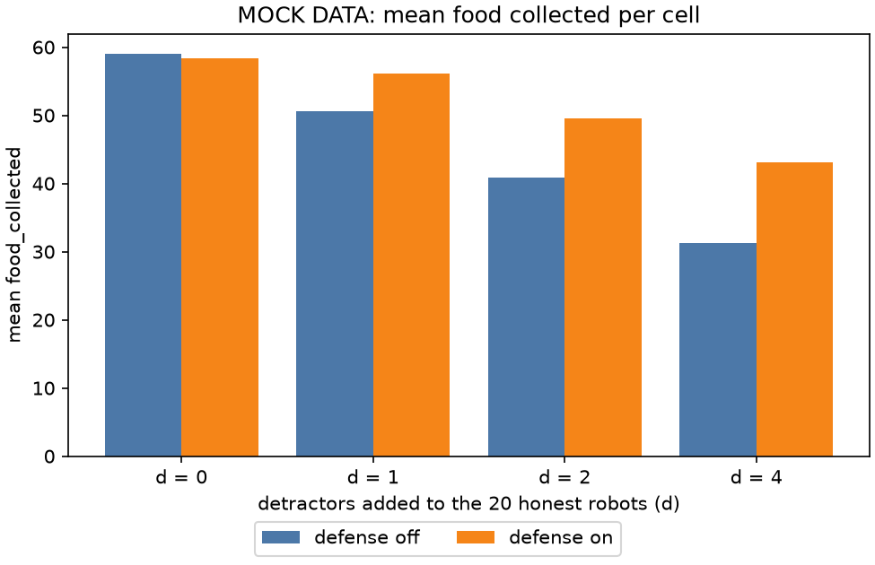

Stage report, step 1 of 3. Back to summary
| What | Write 80 MOCK runs (fake data) that follow the log schema. |
|---|---|
| Why | Milestone M1 shows the shape and the flow on mock data first. That serves goals G1 and G2 before any real pipeline exists. |
| Input data | No input data. Every value is generated (fake) by tools/make_mock_runs.py. |
| Output data | 80 run folders under mock/runs/. 320 files, 71.8 MB. |
| Result (numbers) | Mean food_collected per cell runs from 31.3 to 59.0. Largest wasted_robot_seconds at d = 0: 0.0. |
| Result (good or bad) | Good: loss grows with d and defense wins part back. Wasted time is 0 at d = 0. |
| Status | ran (80 runs found) |
Figure and table

| d | defense | runs | mean food_collected | mean wasted_robot_seconds |
|---|---|---|---|---|
| 0 | off | 10 | 59.0 | 0.0 |
| 0 | on | 10 | 58.4 | 0.0 |
| 1 | off | 10 | 50.6 | 78.3 |
| 1 | on | 10 | 56.1 | 38.8 |
| 2 | off | 10 | 40.9 | 159.6 |
| 2 | on | 10 | 49.5 | 84.9 |
| 4 | off | 10 | 31.3 | 281.1 |
| 4 | on | 10 | 43.1 | 153.0 |